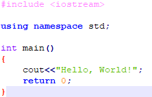
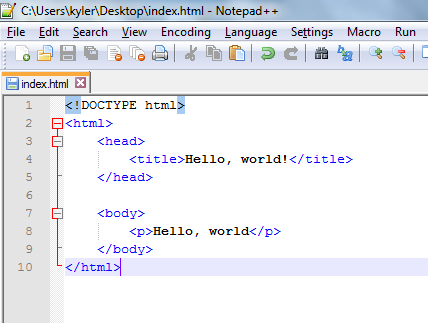

Programming Languages
When it comes to programming, nothing is more important than choosing a programming language. While there are too many to talk about in detail, we have decided to pick four of the most widely recognized programming languages; C++, Python, HTML, and Javascript.
C++
Created in 1985, C++ is by far one of the most widely recognised programming languages. C++ was made by Danish Computer Scientist Bjarne Stroustrup when trying to make a better version of C. which was originally was called "C with Classes". The name C++ was later created from the combination of C and the ++ increment operater. This new version of C included classes, virtual functions, constants, and the new function notation written //like this.

A Hello World program written in C++
Python
HTML
In 1980, Tim Berners-Lee, a contracted physicist at CERN, proposed ENQUIRE, the first prototype of what we know as HTML. HTML is a web based markup language that is used to make creative and complex website, while still allowing people to pick it up easily. As a matter of fact, this site, in conjuction with CSS, is made with HTML.

Hello World written with HTML tags
JavaScript
Reverse engineered out of Mosaic's web browser, JavaScript, or JS, was released in 1995 by Microsoft, which allowed for Java like code to be executed flawlessly in the browser